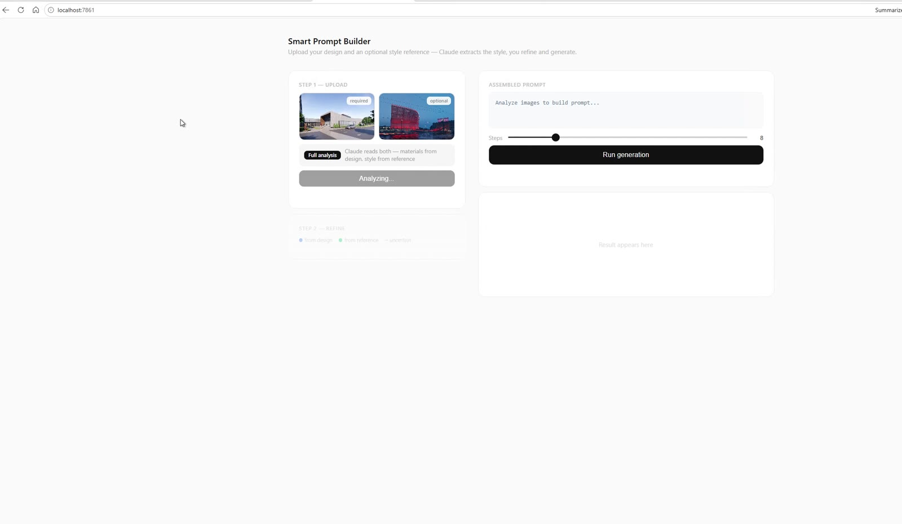
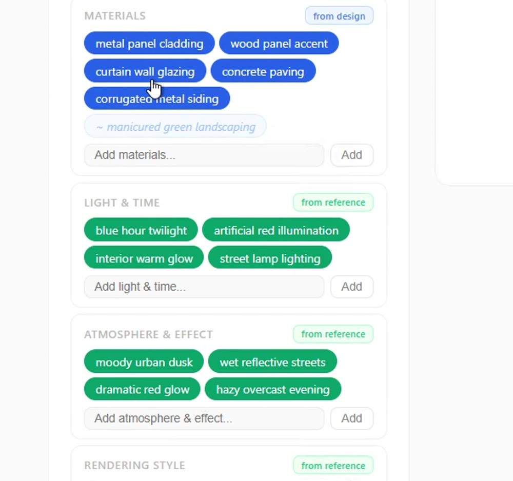
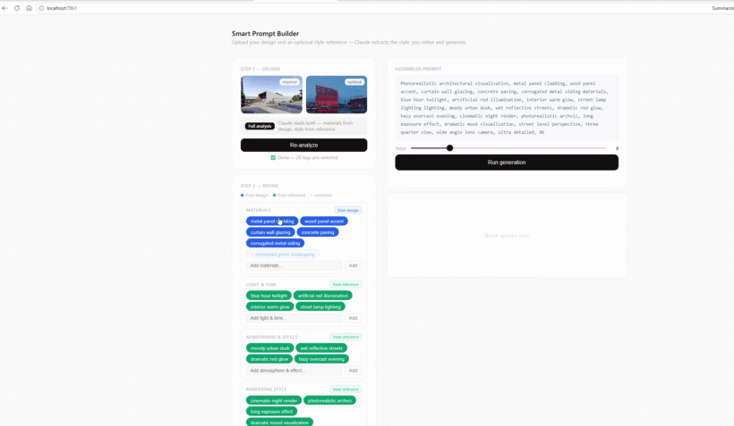
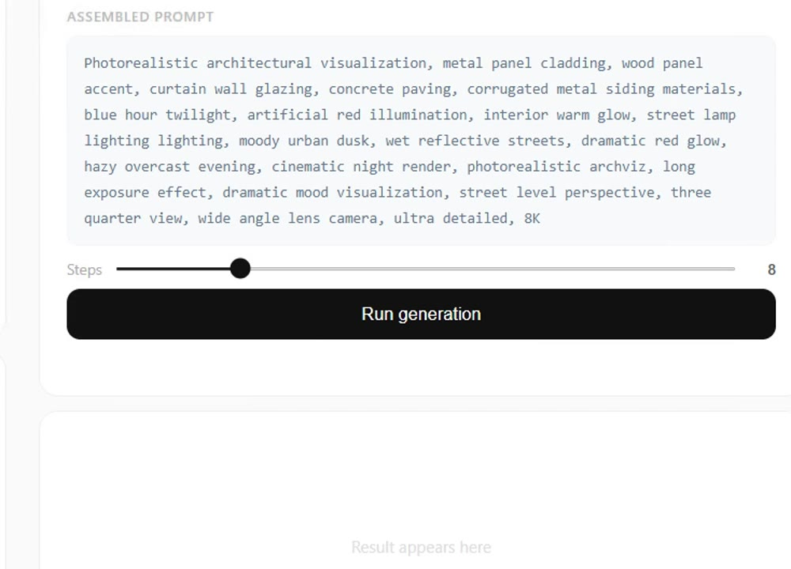
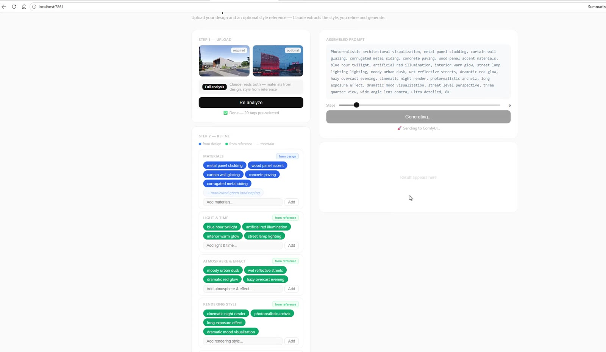

A render is only as good as its prompt, but writing one is slow and inconsistent—long strings of materials, lighting, mood, and camera terms, retyped from scratch every time and easy to get wrong. Smart Prompt removes that friction by reading the images instead of asking you to describe them.
You upload a design image and, optionally, a reference for mood. A vision model analyzes both—pulling materials from the design and atmosphere from the reference—and returns a set of editable, color-coded tags grouped by category. Those tags assemble into a clean, structured prompt in real time, which feeds straight into the render pipeline. The result is a prompt that is faster to build, easy to refine, and traceable back to the images that shaped it.
The full tool, end to end: upload, analyze, refine the tags, and assemble a prompt ready to render. Use the controls to scrub through, or let it loop.

Two inputs: a required design image and an optional reference. A single analysis pass reads both—materials from the design, style and mood from the reference—and reports back with the tags pre-selected.

Every tag carries its origin: blue means it was read from the design, green from the reference, and a faded outline marks an uncertain guess. Grouped into materials, light & time, atmosphere, and more—so the prompt stays legible.

LiveToggling a tag, adding a custom one, or dropping a suggestion updates the assembled prompt instantly—refinement happens by clicking, not retyping.

All the active tags collapse into one clean, render-ready string. A steps slider sets the quality, and a single button hands it off to the pipeline.

The prompt runs straight through to the render engine—closing the loop from a pair of images to a finished, fully described generation.